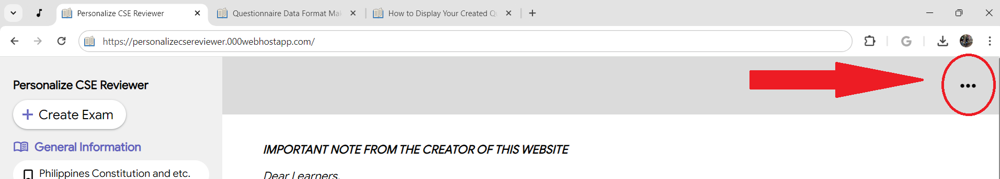
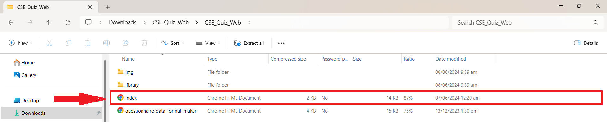
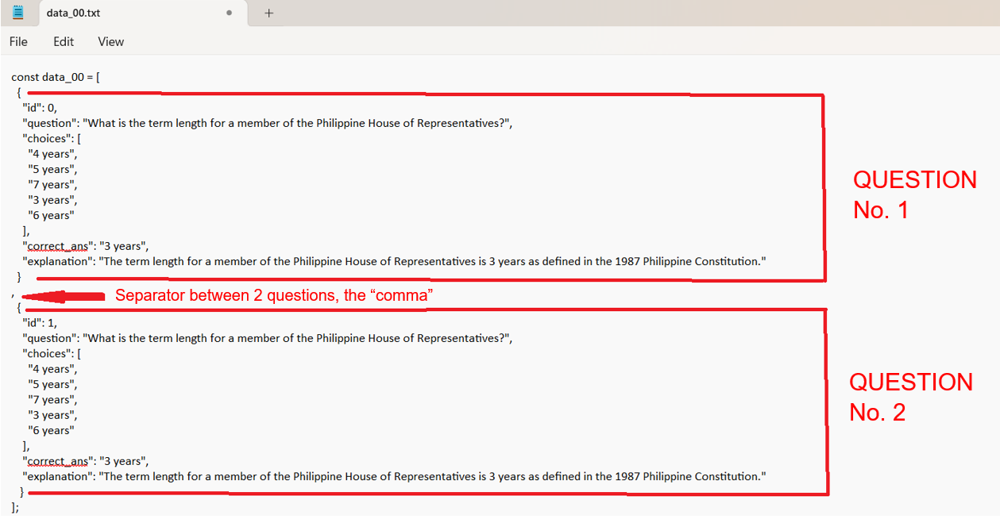
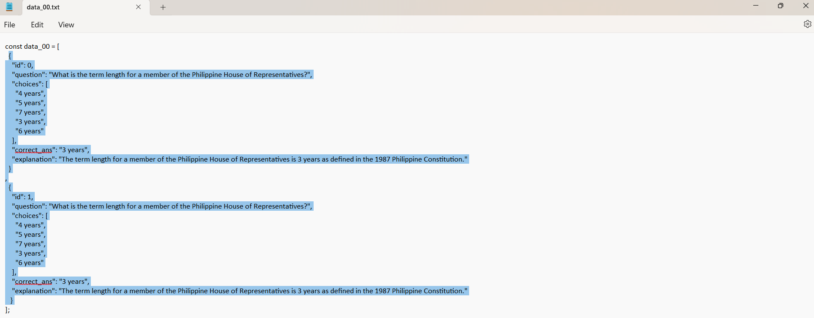
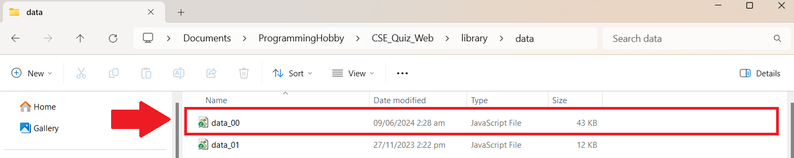
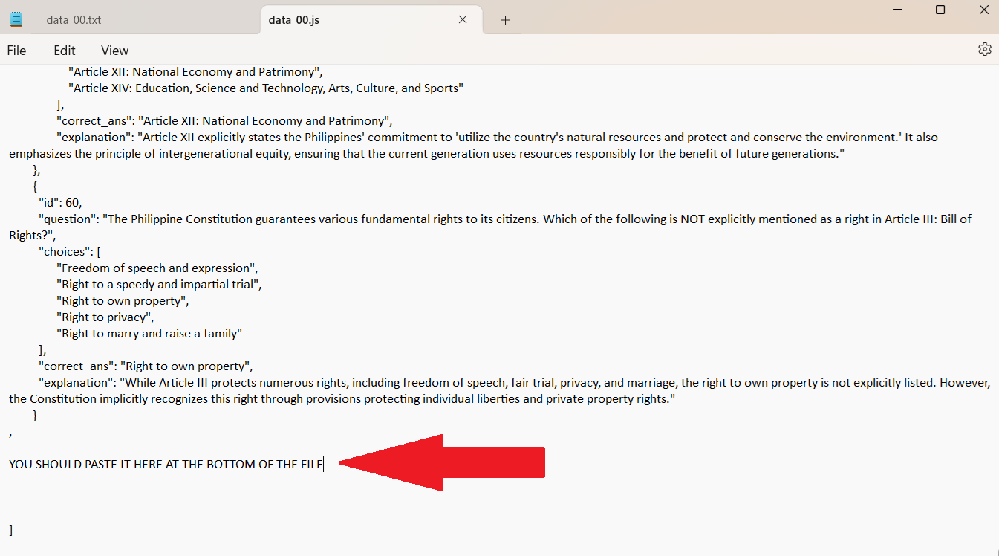

Step 1 - Download and Extract the CSE_Quiz_Web.zip file
Download the entire Personalize CSE Reviewer website first by clicking the three dots here, and click the "Download the Website" button. then ...
Extract the Zip file and double click the "index.html" file.
Step 2 - Create your own questions
Click the "Create your own Question" button inside three dots. After you have created your own questions and clicked the SAVE button, a success notification will be displayed.
Click the download button and open the downloaded txt file using Notepad. You can save multiple questions in one txt file, but only create questions based on your selected topic.
Familiarize the data coding:
data_00 is for the topic about the General Information Philippines Constitution and etc.
data_01 is for the topic about the General Information Code of Conduct and Ethical Standards for Public Officials and Employees (R.A. 6713)
data_02 is for the topic about the General Information Environmental Management and Protection
data_03 is for the topic about the General Information Peace and Human Rights Issues and Concepts
data_04 is for the topic about the Numerical Ability Basic Operations
data_05 is for the topic about the Numerical Ability Identifying Next Numbers
data_06 is for the topic about the Numerical Ability Word Problems
data_07 is for the topic about the Analytical Ability Word Association
data_08 is for the topic about the Analytical Ability Identifying Assumptions and conclusions
data_09 is for the topic about the Analytical Ability Logical Reasoning
data_10 is for the topic about the Analytical Ability Data interpretation
data_11 is for the topic about the Verbal Ability Grammar and correct usage
data_12 is for the topic about the Verbal Ability Vocabulary
data_13 is for the topic about the Verbal Ability Paragraph organization
data_14 is for the topic about the Verbal Ability Reading comprehension
Step 3 - Copy and Paste the data questions
Data Questions inside txt file will be look like this.
Always remember the "comma" separator or it won't run after you paste the custom question inside the original data file.
Next, copy the question by highlighting the text and PASTE it to the original data file for the topic.
Since, this is "data_00". open the "data_00.js" inside the library data folder. Open it using Notepad.
This is the data look like inside the "data_00.js". PASTE it here at the bottom of the file and save it using "CTRL+S".
Always remember the "comma" separator or it won't run after you paste the custom question inside the original data file.
Step 4 - Refresh the Offline Website
Refresh the Offline website to load your own questions.